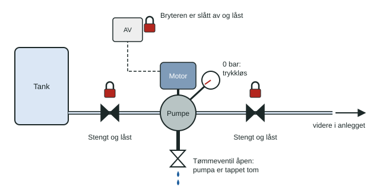

Sikker jobbing ved vedlikehold
Mange alvorlige ulykker i prosessindustrien har skjedd under vedlikehold, eller når utstyr skulle startes igjen etterpå. Her lærer du hvordan en vedlikeholdsjobb gjøres trygt, fra planlegging til utstyret er i drift igjen, og hva som er operatørens oppgave.
Hvorfor er vedlikehold farlig?
Under vanlig drift er farlige stoffer, trykk og varme stengt inne i rør og tanker. Ved vedlikehold åpnes utstyret. Da kan det som var stengt inne, komme ut. I tillegg er situasjonen annerledes enn vanlig: Det er folk i anlegget som ikke jobber der til daglig, flere jobber pågår samtidig, og noe av sikkerhetsutstyret kan være koblet ut.
Det farligste øyeblikket er ofte når utstyret skal tas i drift igjen. På Piper Alpha startet nattskiftet en pumpe uten å vite at sikkerhetsventilen var fjernet for vedlikehold. Les mer i Storulykker.
En sikker vedlikeholdsjobb har fire faser:
- planlegge og få tillatelse
- gjøre utstyret klart (isolere og sikre)
- gjøre jobben
- levere utstyret tilbake til drift
1. Planlegge og få tillatelse
Jobben starter med en arbeidsordre. Før noen begynner, trengs det
- en arbeidstillatelse, som sier hva som skal gjøres, hvilke farer som finnes, og hvilke sikringstiltak som skal være på plass. Den godkjennes av den som har ansvaret for området, ofte en erfaren operatør eller kontrollrommet.
- en sikker jobb-analyse (SJA) når jobben er ny eller sjelden, når det ikke finnes en prosedyre, når forholdene er annerledes enn vanlig, eller når flere faggrupper jobber samtidig.
- en prosedyre for jobben, og en plan for hvordan utstyret skal isoleres.
Arbeidstillatelsen gjør at kontrollrommet vet hvor det jobbes, og at to jobber som kan være farlige for hverandre, ikke skjer på samme sted samtidig. Et eksempel er sveising ved siden av en tank som skal åpnes.
2. Gjøre utstyret klart: isolere og sikre
Før utstyret åpnes, skal det være skilt fra resten av anlegget og fritt for all farlig energi og alle farlige stoffer. Å skille utstyret fra resten av anlegget kalles å isolere det. Dette er ofte operatørens jobb.
Finn alle energikildene
Tenk gjennom hva som kan skade den som skal jobbe:
- Strøm: Motoren kan starte.
- Trykk: Væske eller gass kan sprute ut når en flens løsnes.
- Farlige stoffer: rester av syre, lut, løsemidler eller giftig gass inne i utstyret
- Varme og kulde: varme rør, damp, eller væske som er svært kald
- Bevegelse: Roterende deler kan gå rundt av seg selv når væske strømmer gjennom. Fjærer kan være spent, og lodd kan være løftet og falle ned.
Energi som er igjen i utstyret etter at det er stoppet, for eksempel trykk i et rør eller en spent fjær, kalles restenergi. Den må fjernes, ikke bare stenges inne.
Slik gjøres en pumpe klar

- Start reservepumpa hvis det finnes en, og stopp så pumpa på vanlig måte.
- Steng ventilen på trykksiden først og så ventilen på sugesiden. Da blir ikke det høye trykket fra trykksiden presset inn i den svakere sugesiden. Ved oppstart åpnes sugesiden først.
- Bryt strømmen på bryteren for motoren, ikke bare med stoppknappen.
- Lås og merk ventilene og bryteren. Hver person som skal jobbe, setter sin egen lås. Se Lås og merk.
- Tøm og trykkavlast pumpa gjennom tømmeventilen, til et trygt sted. Har den inneholdt farlige stoffer, spyles den etter prosedyren. Noen kjemikalier, for eksempel konsentrert svovelsyre, reagerer kraftig med vann, og nitrogen kan fortrenge oksygenet i lufta og gi fare for kvelning.
- Kontroller at utstyret er trygt: Prøv å starte pumpa fra stedet (den skal ikke starte), og sett startbryteren tilbake til stopp etterpå. Se at trykkmåleren viser 0 bar. Mål gass hvis det kan være gass.
Du kan øve på rekkefølgen i Øv: Lås og merk i riktig rekkefølge.
Én stengt ventil er ikke alltid nok
En stengt ventil kan lekke gjennom setet, særlig hvis den er gammel. Ved farlige stoffer eller høyt trykk brukes derfor sterkere isolering:
- Dobbel avstengning med tømming: To ventiler etter hverandre stenges, og en liten ventil mellom dem åpnes. Lekker den første ventilen, renner væsken ut mellom ventilene i stedet for inn til utstyret.
- Blinding: En tett plate (blindflens) settes inn i røret. Det er en av de sikreste måtene å isolere på. Før noen går inn i en tank, kreves blinding, eller at et rørstykke tas ut slik at røret er frakoblet.
3. Gjøre jobben
- Arbeidstillatelsen skal være på stedet, og alle som jobber, skal kjenne innholdet.
- Gjør bare den jobben som står i tillatelsen. Viser det seg at mer må gjøres, må tillatelsen endres først.
- Stopp arbeidet hvis noe endrer seg: gassalarm, lekkasje, uventet trykk, ny lyd i anlegget, eller hvis du er usikker. Alle har rett og plikt til å si stopp.
- Hold orden. Verktøy og deler som ligger igjen, kan gjøre skade når utstyret startes.
- Blir jobben ikke ferdig før skiftet slutter, skal det stå tydelig i tillatelsen og i vaktoverleveringen hva som er gjort, og hva som mangler.
4. Levere tilbake til drift
Når utstyret settes i drift igjen etter vedlikehold, kalles det tilbakelevering. Gjør det steg for steg:
- Den som har gjort jobben, melder at den er ferdig, at verktøyet er fjernet og at vern er satt på plass.
- Operatøren kontrollerer utstyret: Er alt satt sammen? Er blindflenser fjernet og pakninger satt i?
- Hver person fjerner sin egen lås. Ingen fjerner en annens lås.
- Tømmeventiler stenges. Utstyret fylles forsiktig, luftes og testes for lekkasje før trykket økes helt.
- Kontrollrommet får beskjed før utstyret startes. Utstyret startes og følges ekstra godt med på den første tiden.
- Arbeidstillatelsen avsluttes, og jobben skrives inn i historikken og i driftsloggen.
Operatøren har meldt at akseltetningen på P-201 lekker lut. Slik går jobben:
- Planlegge: Arbeidsordre. Arbeidstillatelse for åpning av utstyr med lut. Verneutstyr etter sikkerhetsdatabladet: ansiktsskjerm, hansker og forkle som tåler lut.
- Klargjøre: Operatøren starter reservepumpa P-202, stopper P-201, stenger ventilene inn og ut, bryter strømmen og låser. Mekanikeren setter også sin egen lås. Pumpa tømmes til avløp for lut og spyles med vann etter prosedyren. Trykkmåleren viser 0 bar, og pumpa starter ikke når mekanikeren prøver.
- Jobbe: Mekanikeren bytter tetningen etter prosedyren og kontrollerer opprettingen.
- Tilbakelevere: Mekanikeren melder ferdig, og vernet er på. Hver person fjerner sin egen lås, pumpa fylles og luftes, og det sjekkes at den ikke lekker. P-201 startes, og arbeidstillatelsen avsluttes. Historikken oppdateres.
- Ingen tillatelse, ingen jobb. Start aldri arbeid som krever arbeidstillatelse, før den er godkjent.
- Stoppknappen er ikke en sikring. Strømmen skal brytes på bryteren og låses.
- Stol ikke på at utstyret er tomt. Løsne bolter på en flens forsiktig, på motsatt side av deg først, slik at eventuelt trykk og væske slipper ut bort fra deg. Løsne boltene, men ta dem ikke ut før flensen har sluppet og det ikke kommer mer ut.
- Ta aldri bort en annens lås, og start aldri utstyr som har en lås eller merkelapp på seg.
- Gå aldri inn i en tank eller kum uten tillatelse, gassmåling og vakt. Se Arbeid i lukkede rom.
Spør deg selv før du begynner: «Hva er det verste som kan komme ut når jeg åpner dette?» og «Hvordan vet jeg at det ikke kommer?» Klarer du ikke å svare på det andre spørsmålet, er utstyret ikke klart.
Test deg selv
1. Hvorfor holder det ikke å trykke på stoppknappen før en pumpe repareres?
- Fordi stoppknappen bare stopper pumpa sakte
- Fordi pumpa kan startes igjen fra kontrollrommet eller automatisk
- Fordi stoppknappen ikke virker når pumpa er varm
En stoppknapp stopper bare motoren. Pumpa kan fortsatt få startsignal fra styresystemet eller fra noen andre. Bryteren skal slås av og låses.
2. Hva er restenergi?
- Strømmen som er igjen i batteriet i en håndlampe
- Energi som er igjen i utstyret etter at det er stoppet, for eksempel trykk i et rør
- Energien som går tapt i en pumpe
Selv når utstyret er stoppet og isolert, kan det være trykk, varme eller en spent fjær igjen. Restenergien må fjernes, for eksempel ved å trykkavlaste og tømme.
3. Hva er dobbel avstengning med tømming?
- At ventilen stenges to ganger for å være sikker
- To ventiler etter hverandre stenges, og en liten ventil mellom dem åpnes, så en lekkasje renner ut mellom dem
- At utstyret tømmes to ganger
Lekker den første ventilen, renner væsken ut gjennom den åpne ventilen i midten i stedet for inn til utstyret der noen jobber.
4. Under jobben går gassalarmen i området. Hva gjør du?
- Gjør ferdig jobben raskt, så utstyret kan startes
- Ringer kontrollrommet og jobber videre mens du venter på svar
- Stopper arbeidet, gjør stedet trygt og går ut av området etter beredskapsplanen
Når forholdene endrer seg, skal arbeidet stoppe. Arbeidstillatelsen gjelder bare for de forholdene den ble gitt for.
5. Mekanikeren har gått hjem, men den personlige låsen til mekanikeren henger fortsatt på bryteren. Pumpa trengs. Hva gjør du?
- Klipper av låsen, siden jobben ser ferdig ut
- Starter pumpa med låsen på, fordi låsen bare er et merke
- Lar låsen sitte og får tak i mekanikeren eller den som har ansvaret, slik at det gjøres etter prosedyren
Ingen fjerner en annens lås. Bedriften har en egen prosedyre for låser som er glemt, der det blir kontrollert at ingen er i fare og at utstyret er klart.
Ordliste
| Begrep | Forklaring | Engelsk |
|---|---|---|
| isolere | Å skille utstyr fra resten av anlegget, slik at strøm, trykk og stoffer ikke kan komme inn mens det jobbes. | isolate |
| restenergi | Energi som er igjen i utstyret etter at det er stoppet, for eksempel trykk, varme eller en spent fjær. | stored energy |
| trykkavlaste | Å slippe ut trykket fra utstyr på en trygg måte før det åpnes. | depressurize |
| dobbel avstengning med tømming | To ventiler etter hverandre er stengt, og en ventil mellom dem er åpen, slik at en lekkasje renner ut i stedet for inn til utstyret. | double block and bleed |
| tilbakelevering | Å overføre utstyret fra vedlikehold til drift igjen, etter kontroll av at det er satt sammen, fritt for låser og klart til å startes. | handback, return to service |
Les mer
- Lås og merk og lukkede rom og Øv: Lås og merk i riktig rekkefølge
- SJA og arbeidstillatelse
- Storulykker – hva kan vi lære?
- Vedlikehold av vanlig utstyr: hva som gjøres på pumper, ventiler og varmevekslere.
Om kildene: Teksten, eksemplene og figurene på denne siden er laget for dette nettstedet. Siden bygger på undervisningsopplegg i kjemiprosess- og laboratoriefag ved Sauda vgs, som er utarbeidet med utgangspunkt i blant annet Kjemien stemmer, Laboranten og åpne nettkilder.